Average number of f-evaluations to reach target
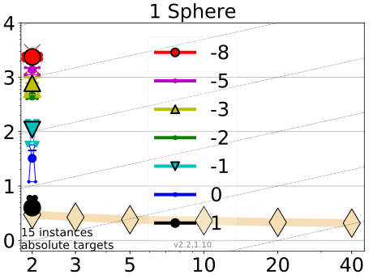 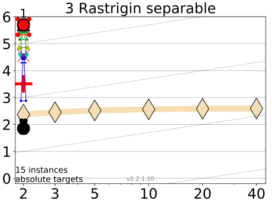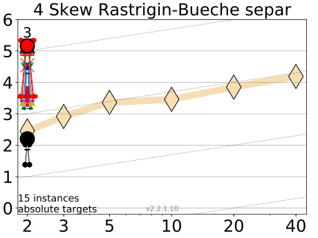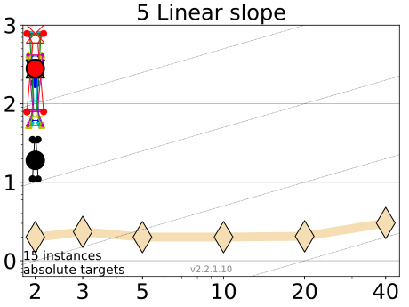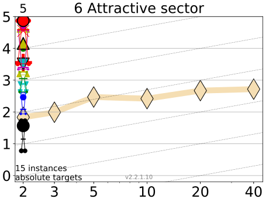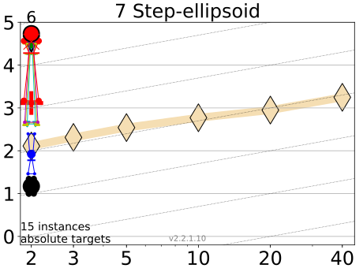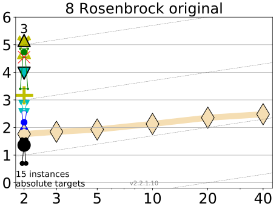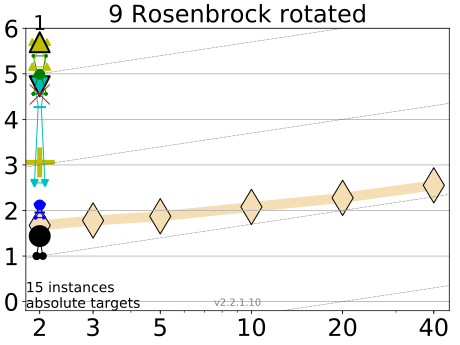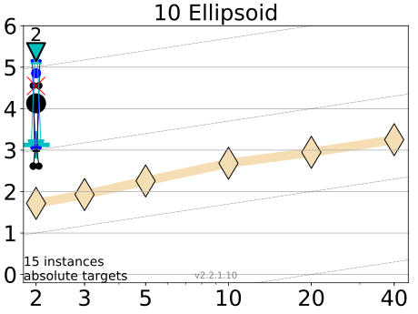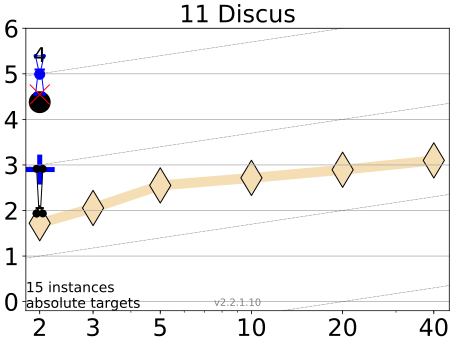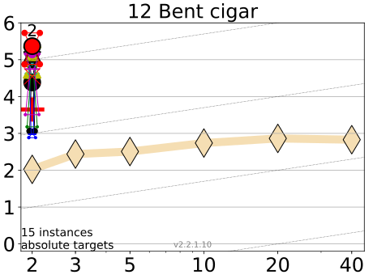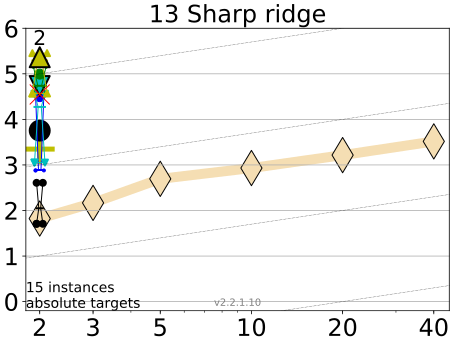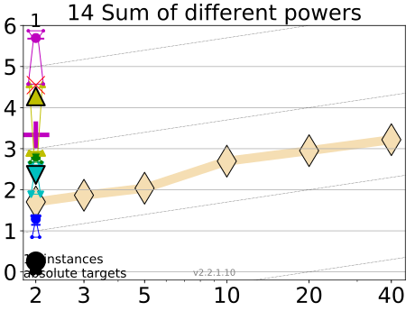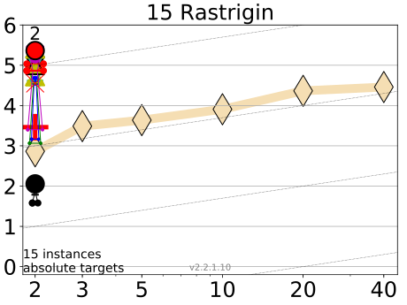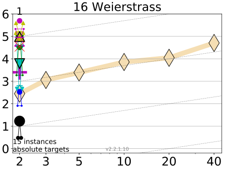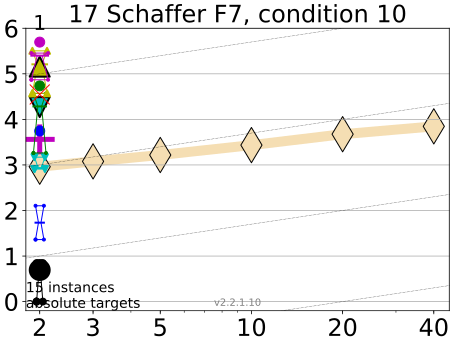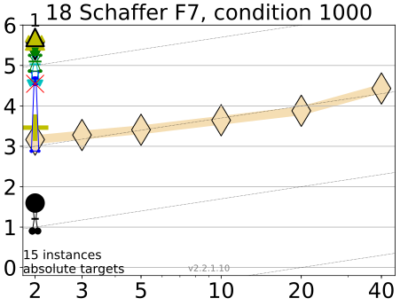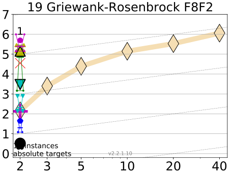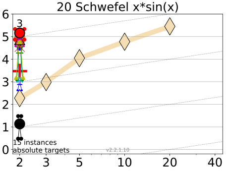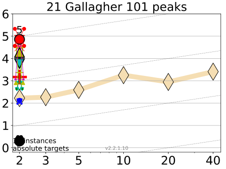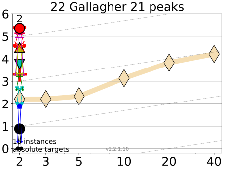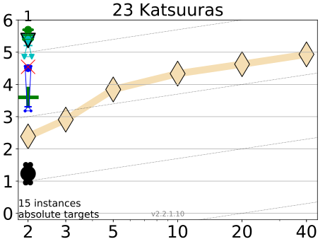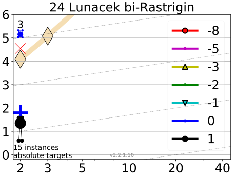
Scaling of runtime with dimension to reach certain target values ∆f. Lines: average runtime (aRT); Cross (+): median runtime of successful runs to reach the most difficult target that was reached at least once (but not always); Cross (×): maximum number of f-evaluations in any trial. Notched boxes: interquartile range with median of simulated runs; All values are divided by dimension and plotted as log10 values versus dimension. Shown is the aRT for fixed values of ∆f = 10k with k given in the legend. Numbers above aRT-symbols (if appearing) indicate the number of trials reaching the respective target. The light thick line with diamonds indicates the best algorithm from BBOB 2009 for the most difficult target. Horizontal lines mean linear scaling, slanted grid lines depict quadratic scaling.
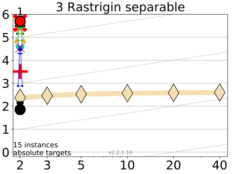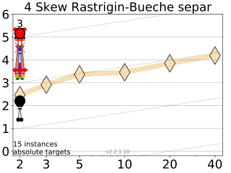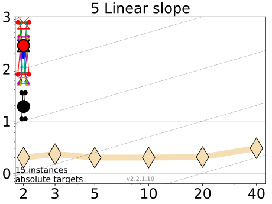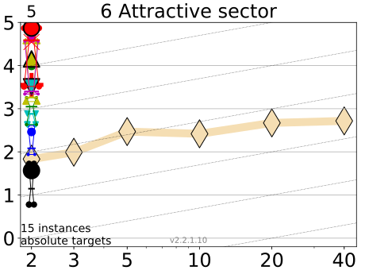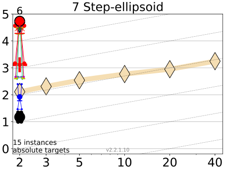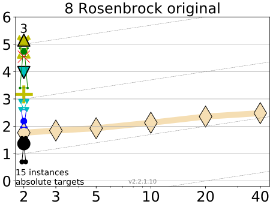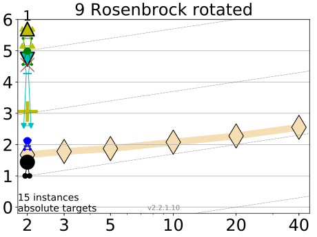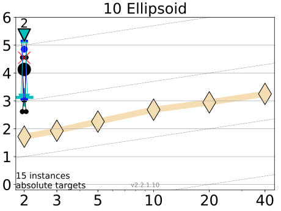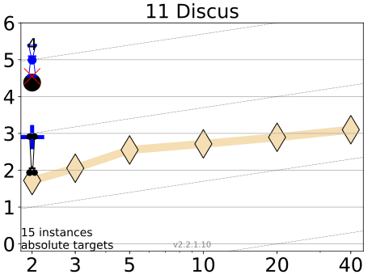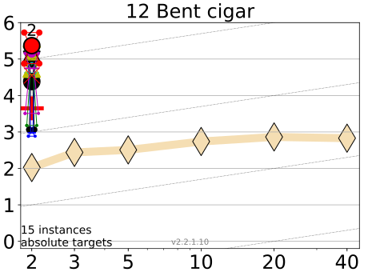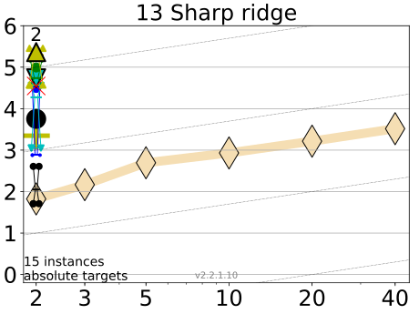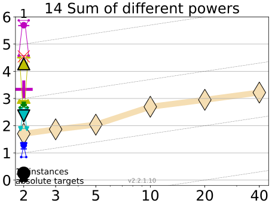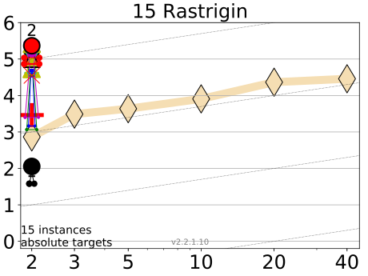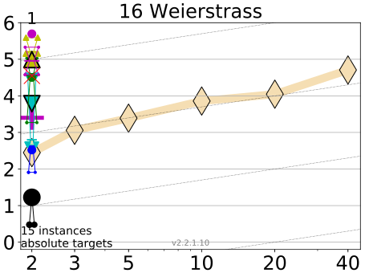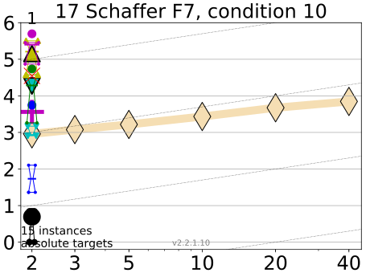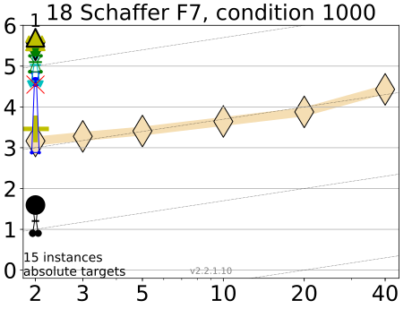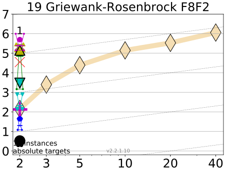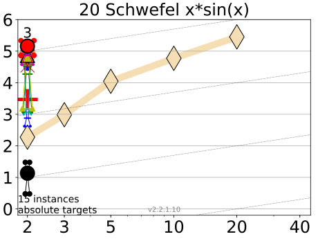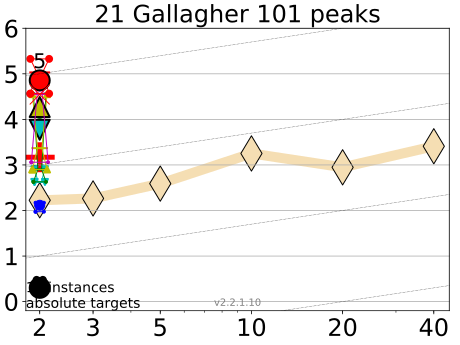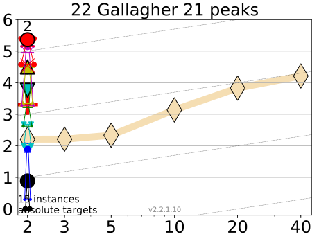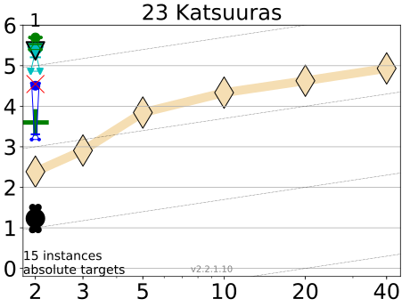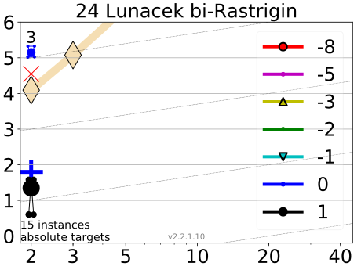
Scaling of runtime with dimension to reach certain target values ∆f. Lines: average runtime (aRT); Cross (+): median runtime of successful runs to reach the most difficult target that was reached at least once (but not always); Cross (×): maximum number of f-evaluations in any trial. Notched boxes: interquartile range with median of simulated runs; All values are divided by dimension and plotted as log10 values versus dimension. Shown is the aRT for fixed values of ∆f = 10k with k given in the legend. Numbers above aRT-symbols (if appearing) indicate the number of trials reaching the respective target. The light thick line with diamonds indicates the best algorithm from BBOB 2009 for the most difficult target. Horizontal lines mean linear scaling, slanted grid lines depict quadratic scaling.